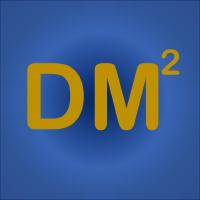

Meng Jiang
I'm an assistant professor in the Department of Computer Science and Engineering at the University of Notre Dame. My research fields are data mining, machine learning, natural language processing, and artificial intelligence. My research focuses on Computational Behavior Modeling for applications such as intelligent assistance, recommendation, fraud detection, and question answering. It is at the intersection of user modeling and graph learning, information extraction and text mining, and text generation. [C.V.]
I am directing the Data Mining towards Decision Making (DM2) Laboratory. I am recruiting PhD students. Drop me an e-mail (mjiang2 [at] nd.edu) if you are interested! Stay healthy, safe, and happy!
What's New
- Check our Github repositories: DM2 @ Github --
 - August 2021: One paper was accepted to ICDM 2021 on dynamic graph learning.
- August 2021: Two papers were accepted to EMNLP 2021 on natural language generation.
- August 2021: One paper was accepted to CIKM 2021 on graph data augmentation for anomaly detection.
- July 2021: One paper was accepted to IEEE TNNLS on graph neural networks for anomaly detection.
- June 2021: One paper was accepted to ACM Computing Surveys on data-driven intrusion detection. The first author was a sophomore when the manuscript was completed.
- June 2021: One paper was accepted to IEEE TKDE on modeling dynamic networks.
- June 2021: One paper was accepted to KDD-DLG 2021 on graph normalizing flow.
- May 2021: Two papers were accepted to KDD 2021 on (1) taxonomny construction by concept name generation and (2) partially aligned graph convolutional networks.
- April 2021: Our ICSE 2021 paper was selected for an ACM SIGSOFT Distinguished Paper Award!
- April 2021: Summer internship: (1) Wenhao Yu will be a summer intern at Microsoft Cognitive Service Research, working with Dr. Chenguang Zhu. (2) Tong Zhao will be a summer intern at Amazon, working with Dr. Bing Yin. (3) Qingkai Zeng will be a summer intern at JD AI Research, working with Dr. Lingfei Wu.
- March 2021: One paper was accepted to ACM TIST on learning complementarity.
- March 2021: Two papers were accepted to NAACL-HTL 2021 on abstractive summarization and technical question answering.
- February 2021: One paper was accepted to ACM TOIS on graph representation learning.
- January 2021: Two papers were accepted to TheWebConf 2021.
- December 2020: Congratulations to Tong Zhao for receiving 2020 Snap Research Fellowship.
- December 2020: Congratulations to Bo Ni for receiving honorable mention, Computing Research Association's (CRA) Outstanding Undergraduate Researcher Award!
- December 2020: One paper was accepted to ICSE 2021 on Transformer models for software traceability.
- December 2020: One paper was accepted to AAAI 2021 on Data Augmentation for Graph Neural Networks.
Latest Publications
- A Synergistic Approach for Graph Anomaly Detection with Pattern Mining and Feature Learning, IEEE Transactions on Neural Networks and Learning Systems, 2021. (In press)
- A Survey on Data-Driven Network Intrusion Detection, ACM Computing Surveys, 2021. (In press)
- Modeling Co-evolution of Attributed and Structural Information in Graph Sequence, IEEE Transactions on Knowledge and Data Engineering, 2021.
- Modeling Complementarity in Behavior Data with Multi-Type Itemset Embedding, ACM Transactions on Intelligent Systems and Technology, 2021.
- Inductive Contextual Relation Learning for Personalization, ACM Transactions on Information Systems, 2021.
- Dynamic Attributed Graph Prediction with Conditional Normalizing Flows, ICDM, 2021.
- Sentence-Permuted Paragraph Generation, EMNLP, 2021.
- Injecting Entity Types into Entity-Guided News Generation, EMNLP, 2021.
- Action Sequence Augmentation for Early Graph-based Anomaly Detection, CIKM, 2021.
- Evolutionary Graph Normalizing Flows, KDD-DLG, 2021.
- Data Efficient Learning on Graphs, KDD, 2021. (tutorial)
- Enhancing Taxonomy Completion with Concept Generation via Fusing Relational Representations, KDD, 2021.
- Cross-Network Learning with Partially Aligned Graph Convolutional Networks, KDD, 2021.
- Technical Question Answering across Tasks and Domains, NAACL-HLT, 2021.
- Enhancing Factual Consistency of Abstractive Summarization, NAACL-HLT, 2021.
- TCN: Table Convolutional Network for Web Table Interpretation, TheWebConf, 2021.
- Few-Shot Graph Learning for Molecular Property Prediction, TheWebConf, 2021.
- Traceability Transformed: Generating More Accurate Links with Pre-Trained BERT Models, ICSE, 2021 (selected for ACM SIGSOFT Distinguished Paper Award).
- Data Augmentation for Graph Neural Networks, AAAI, 2021.
Current Projects
- NSF CRII: III: Complementarity Learning for Contextual Behavior Modeling. (10/01/2019 - 09/30/2021)
- NSF SHF: Medium: Collaborative Research: Semantically-Enhanced Software Traceability for Supporting Human-Centric Tasks. (08/15/2019 - 08/14/2023)
Prior Projects
- Global Gateway: Digital Empires: Structured Biographical and Social Network Analysis of Early Chinese Empires. (05/01/2019 - 08/31/2020)
- Condé Nast: Representation Learning for Modeling and Predicting User Engagement and Propensity for Conversion Through the Engagement Funnel. (01/21/2019 - 05/20/2020)

|

|

|

|

|

|
Last updated on August 31, 2021.